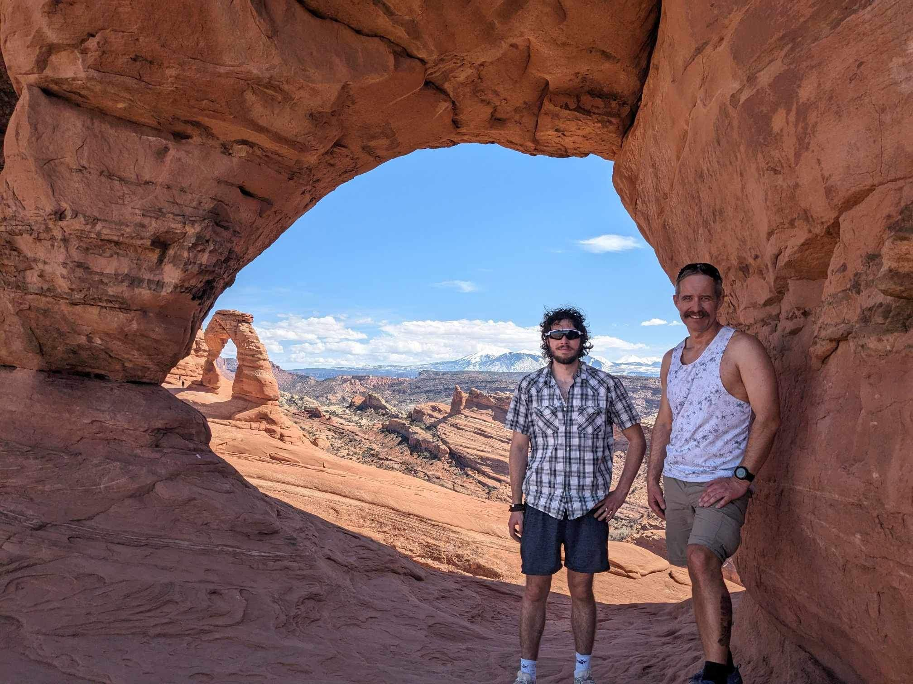

|

|
Hi there! My name is Eryk Jastrzebski, and I recently graduated from the University of Hull with a degree in computer science. I love programming;
it's more than simply my subject of study. I've devoted many hours to perfecting my abilities since I enjoy coming up with creative,
effective answers to challenging issues. I have a wide range of tools, from C++ to Javascript and Rust, and I don't hesitate to use them.
I've developed a broad range of abilities during my academic career that allow me to efficiently design, build, and debug programmes.
I've done well working in groups, collaborating with other programmers on different projects to produce software that satisfies the needs of our clients.
One of my best skills is my ability to work well in a group, and I enjoy the challenge of solving complex challenges with others.
When I'm not lost in programming, I like to explore new cities and take in the beauty of nature.
I enjoy exploring urban environments and going on excursions along beautiful paths. I find that
these experiences—whether they involve strolling through busy cities or climbing a mountain—provide the ideal counterbalance to my existence focused mostly on technology.
In the rapidly changing world of technology, keeping up with industry developments is essential,
but so is taking time to unwind in nature and explore new places.
I'm excited to carry on with my programming career and make a positive impact on the field in the years to come.
I appreciate you taking the time to browse my portfolio and learn more about who I am. Take a look at some of the projects that I have worked on, on the "Projects" page.
|
|